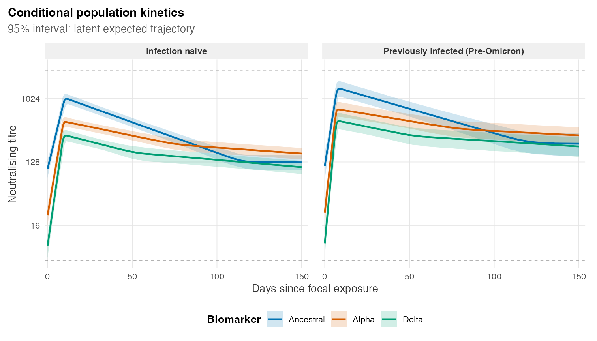

epikinetics fits hierarchical kinetics models to
repeated positive biomarker measurements after one focal exposure. This
page is the shortest path from a data frame to a fitted population
trajectory; the focused articles linked at the end explain each
step.
Prepare the data
The package bundles public neutralising-antibody data for examples. Preparation is deliberately separate from fitting, so every transformation can be checked before starting Stan.
library(epikinetics)
dat <- read.csv(
system.file("extdata", "delta.csv", package = "epikinetics")
)
prepared <- prepare_epikinetics_data(
dat,
formula = ~ infection_history,
biomarker_order = c("Ancestral", "Alpha", "Delta"),
lower_limit = 5,
upper_limit = 2560
)
prepared#> Prepared epikinetics model data
#> Observations: 2255
#> Participants: 335
#> Biomarkers: 3 (Ancestral, Alpha, Delta; explicit order)
#> Covariates: infection_history
#> Effects on: baseline, time_to_peak, waning_duration, boost_rate, early_waning_rate, late_waning_rate
#> Random effects: baseline, boost_rate, early_waning_rate, late_waning_rate
#> Censoring: none=2003, left=126, right=126
#> Time range: 0 to 578 since exposure
#> Model scale: log2(value / 1); range 2.321928 to 11.321928
#> Exposure: one fixed focal exposure per participant
prediction_grid(prepared)#> .profile infection_history
#> 1 1 Infection naive
#> 2 2 Previously infected (Pre-Omicron)Use summary(prepared),
model.matrix(prepared), and
stan_data(prepared) to inspect the validated observations,
formula encoding, participant/biomarker indices, censoring limits, and
exact Stan data. The Data, Covariates, and Censoring articles describe those
contracts.
Fit and diagnose
CmdStan is installed explicitly once with
cmdstanr::install_cmdstan(). The first fit compiles and
caches the threaded model; later fits reuse it.
fit <- fit_epikinetics(
prepared,
chains = 4,
parallel_chains = 4,
threads_per_chain = 2,
seed = 2026
)
fit
diagnose_epikinetics(fit)Do not interpret posterior estimates until the diagnostic summary is satisfactory. Fitting the model explains the computational arguments, and Diagnostics explains the checks.
Predict population kinetics

Conditional population kinetics produced by the code above. Biomarkers are overlaid by colour; infection-history profiles define panels. Lines are posterior medians and ribbons are 95% credible intervals for the latent trajectories.
The figure is precomputed from an actual four-chain package fit so
routine documentation builds do not rerun MCMC. Both posterior mean and
median remain in pred; the plotting method uses the median
by default.
Continue with Population-level
kinetics for prediction grids, newdata, and uncertainty
targets, or Individual-level
kinetics to reconstruct fitted participants. The case study then combines the workflow in a
complete applied analysis.